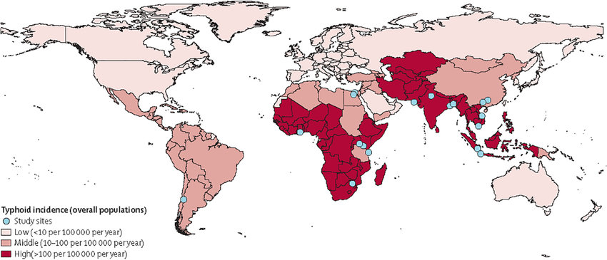

Fièvre entérique
Fièvre typhoïde & paratyphoïde — Salmonella enterica sérotype Typhi & Paratyphi
Cause bactérienne majeure de fièvre chez le voyageur de retour d'Asie du Sud. L'émergence de souches XDR au Pakistan et en Inde et les premiers cas de résistance aux carbapénèmes imposent une adaptation constante de l'antibiothérapie empirique.
Épidémiologie
Charge mondiale
- Environ 14 millions de cas et 136 000 décès par an dans le monde (GBD 2017)[3,4]
- Prévalence la plus élevée en Asie du Sud (Pakistan, Inde, Bangladesh, Népal) et Afrique subsaharienne
- S. Typhi responsable d'environ 75 % des cas ; S. Paratyphi A d'environ 25 %
Données suisses
- 208 cas de fièvre typhoïde en Suisse entre 1993 et 2004, dont 88,5 % liés au voyage ; < 15 cas/an depuis 2001[1]
- Risque le plus élevé pour les voyageurs suisses : Pakistan (24/100 000), Cambodge (20/100 000), Népal (14/100 000), Inde (12/100 000)[1]
- Déclaration obligatoire en Suisse : le médecin et le laboratoire doivent déclarer tout cas confirmé à l'OFSP[21]
Population à risque
- Voyageurs VFR (visiting friends and relatives) au sous-continent indien et au Pakistan : population la plus touchée en Europe[6,7]
- 71 % des cas XDR importés en Europe/Amérique du Nord sont des enfants rendant visite à la famille au Pakistan[6]
- En Europe : environ 300 cas/an déclarés en Angleterre et Pays de Galles, la plupart importés d'Asie du Sud[2]
Agent causal
- Salmonella enterica sérotype Typhi — responsable de la fièvre typhoïde (~75 % des fièvres entériques)
- Salmonella enterica sérotype Paratyphi A (et plus rarement B, C) — responsable des fièvres paratyphoïdes (~25 %)
- Bactéries à Gram négatif, strictement humaines (pas de réservoir animal), à tropisme intracellulaire
Répartition géographique

| Région | Risque | Profil de résistance dominant |
|---|---|---|
| Asie du Sud (Pakistan, Inde, Bangladesh, Népal) | Très élevé | FQNS généralisée ; XDR (Pakistan > 70 %) ; émergence résistance azithromycine et carbapénèmes[10] |
| Asie du Sud-Est (Cambodge, Indonésie) | Élevé | FQNS fréquente ; MDR en diminution |
| Afrique subsaharienne | Élevé (données limitées) | MDR variable ; fluoroquinolones souvent encore actives |
| Amérique latine | Faible à modéré | Fluoroquinolones généralement actives |
Transmission & incubation
- Voie féco-orale : consommation d'eau ou d'aliments contaminés par les selles d'un porteur (malade ou porteur asymptomatique)
- Facteurs de risque : eau non traitée, aliments crus, fruits de mer, produits laitiers non pasteurisés, glaçons
- Réservoir strictement humain — pas de réservoir animal
- Jusqu'à 10 % des patients deviennent porteurs chroniques (excrétion > 12 mois) avec risque de transmission pour l'entourage[21]
| Sérotype | Incubation | Commentaire |
|---|---|---|
| S. Typhi | 7–14 jours (extrêmes : 3–60 jours) | Durée proportionnelle à l'inoculum ingéré |
| S. Paratyphi A | 1–10 jours | Incubation souvent plus courte[3,8] |
Présentation clinique
Phase d'état (1re–2e semaine)
- Fièvre d'installation progressive sur 3–7 jours, devenant persistante en plateau à 39–40 °C
- Céphalées, malaise, myalgies
- Toux sèche (fréquente dans les 2 premières semaines)
- Symptômes abdominaux : douleurs diffuses, constipation initiale puis diarrhées
- Inappétence, nausées
Examen clinique
- Bradycardie relative (dissociation pouls-température) — signe classique mais inconstant
- Splénomégalie (fréquente en 2e semaine)
- Éruption maculaire tronculaire couleur saumon (« taches rosées ») — inconstante, fugace
- Douleurs abdominales diffuses à la palpation
- Hépatomégalie possible
Complications (2e–3e semaine si non traité)
| Complication | Mécanisme | Remarque |
|---|---|---|
| Hémorragie digestive | Érosion des plaques de Peyer | Survient en 2e–3e semaine |
| Perforation intestinale | Nécrose iléale | Urgence chirurgicale ; mortalité 10–30 % |
| Encéphalopathie typhoïde | Toxicité systémique | Confusion, obnubilation |
| Myocardite | Atteinte toxique/immunologique | Rare mais grave |
| Cholécystite | Infection biliaire (portage) | Associée au portage chronique |
⚠ Tableau modifié par l'automédication
La prise préalable d'antibiotiques (automédication fréquente en zone endémique) peut modifier considérablement le tableau clinique et retarder le diagnostic. Toujours interroger le patient sur la prise médicamenteuse récente.[8]
Biologie
- Anémie normochrome normocytaire
- Leucopénie avec déviation gauche (plus fréquente chez l'adulte) — leucocytose possible chez l'enfant
- Perturbation des tests hépatiques (cytolyse modérée fréquente)
- CRP élevée (souvent > 100 mg/L)
- Thrombopénie possible dans les formes sévères
⚠ Leucopénie ≠ origine virale
Contrairement à la plupart des bactériémies, la fièvre typhoïde s'accompagne typiquement d'une leucopénie. Ce profil peut orienter à tort vers un diagnostic viral (dengue, hépatite) et retarder la mise en culture.
Diagnostic
| Méthode | Sensibilité | Commentaire |
|---|---|---|
| Hémoculture (gold standard en pratique) | 40–80 % | Optimale en 1re semaine ; prélever 2–3 hémocultures (10–15 mL/flacon) avant toute antibiothérapie. Positivité en 2–5 jours. Antibiothérapie préalable réduit la sensibilité de 20–30 %.[3,8] |
| Culture de moelle osseuse | 80–95 % | Méthode de référence absolue mais rarement pratiquée en routine. Reste positive même sous antibiothérapie. À considérer si forte suspicion et hémocultures négatives.[3,8] |
| Coproculture | ~30 % | Se positive plus tardivement (2e–3e semaine). Utile pour le suivi du portage chronique. |
| Tests sérologiques (Widal, TDR) | Variable, faible | NON recommandés en milieu non endémique. Manque de sensibilité et de spécificité chez le voyageur.[3,8,9] |
| PCR | En développement | Pas encore largement disponible en routine. Potentiellement utile pour la détection rapide et la caractérisation des résistances. |
Diagnostic différentiel
| Diagnostic | Éléments distinctifs |
|---|---|
| Paludisme | Toujours exclure en priorité chez un fébrile de retour de zone tropicale (frottis + TDR) |
| Dengue, chikungunya | Fièvre plus brutale, myalgies intenses, éruption, thrombopénie profonde |
| Rickettsiose | Escarre d'inoculation, éruption, voyage en zone d'endémie (Afrique australe ++) |
| Leptospirose | Ictère, insuffisance rénale, exposition hydrique |
| Hépatite virale aiguë (A, E) | Ictère prédominant, transaminases très élevées (> 10N) |
| Amibiase hépatique | Hépatomégalie douloureuse, imagerie évocatrice |
⚠ TDR paludisme faussement positif
Un TDR paludisme (HRP2) peut être faussement positif dans la fièvre typhoïde. Ne pas exclure la typhoïde en présence d'un TDR paludisme positif si le tableau clinique est évocateur — toujours confirmer par frottis/goutte épaisse et prélever des hémocultures.
Traitement
Classification des résistances[7,10]
| Terme | Définition |
|---|---|
| MDR (multidrug-resistant) | Résistance à ampicilline + chloramphénicol + triméthoprime-sulfaméthoxazole |
| FQNS (fluoroquinolone non-susceptible) | CMI ciprofloxacine ≥ 0,06 mg/L (EUCAST) ; échecs cliniques documentés |
| XDR (extensively drug-resistant) | MDR + résistance aux fluoroquinolones + résistance aux céphalosporines de 3e génération (ceftriaxone) |
Épidémiologie des résistances (données récentes)
- Asie du Sud : non-susceptibilité aux fluoroquinolones généralisée ; haute résistance à la ciprofloxacine (≥ 3 déterminants) atteignant 20 % des isolats[10]
- Pakistan : souche XDR (clade H58/4.3.1) devenue dominante — 70 % des isolats en 2020[10]
- Inde : émergence de résistance à la ceftriaxone dans le lignage 4.3.1.2.1[10]
- Résistance à l'azithromycine : détectée à faible prévalence en Asie du Sud, y compris dans des génotypes ciprofloxacine-résistants — tendance préoccupante[10,11]
- Résistance aux carbapénèmes : premier cas de S. Typhi carbapénème-résistant (blaNDM-5) en Allemagne en 2024, chez un voyageur de retour d'Inde ; plusieurs cas documentés en Inde en 2025[12,13]
- Bangladesh 2024 : foyer de S. Typhi résistant à la ceftriaxone[22]
⚠ Résistance aux carbapénèmes
Premier cas mondial de S. Typhi porteur de blaNDM-5 (carbapénème-résistant) importé en Allemagne en 2024 d'Inde. Potentiel de souches pan-résistantes si combiné avec la résistance à l'azithromycine. Le patient allemand a été traité avec succès par triméthoprime-sulfaméthoxazole (la souche ayant perdu la résistance MDR classique).[12,13]
Formes non compliquées — Traitement oral
Retour d'Asie du Sud (empirique, avant antibiogramme) :
| Option | Posologie | Durée | Commentaire |
|---|---|---|---|
| Azithromycine (1re ligne) | 500 mg–1 g J1, puis 500 mg/j | 7 jours | Préférée empiriquement car active sur souches FQNS et XDR (sauf résistance azithromycine)[3,8,14] |
| Ciprofloxacine | 2 × 500 mg/j | 7–10 jours | NE PAS utiliser empiriquement si retour d'Asie du Sud (taux de résistance > 90 % Pakistan/Inde)[3,8] |
Retour d'Afrique / Amérique latine / autres régions :
| Option | Posologie | Durée | Commentaire |
|---|---|---|---|
| Ciprofloxacine | 2 × 500 mg/j | 7–10 jours | Reste une option si provenance hors Asie du Sud et antibiogramme sensible |
| Azithromycine | 500 mg–1 g J1, puis 500 mg/j | 7 jours | Alternative sûre et efficace |
Formes sévères / compliquées — Traitement IV
| Option | Posologie | Durée | Commentaire |
|---|---|---|---|
| Ceftriaxone (1re ligne) | 2 g/j IV | 10–14 jours | Efficace sauf souches XDR/ESBL ; disponible partout en Suisse[3,8,9] |
| Méropénème | 1 g toutes les 8 h IV | 10–14 jours | Réservé aux souches XDR (résistantes à la ceftriaxone) ou en cas d'échec clinique[6,7,14] |
| Azithromycine IV + méropénème | Association | Variable | Stratégie en cas de XDR sévère ; l'azithromycine cible les bactéries intracellulaires[14] |
Souche XDR confirmée (retour du Pakistan, Inde)
⚠ Prise en charge XDR
Portage chronique (excrétion > 12 mois)
- Ciprofloxacine 750 mg × 2/j pendant 28 jours (si souche sensible)[14]
- Cholécystectomie à discuter si lithiase biliaire associée
- Peu d'évidence solide pour guider le traitement du portage
Disponibilité en Suisse
Médicaments disponibles
- Azithromycine (Zithromax® et génériques) : largement disponible, formes orales
- Ceftriaxone (Rocephin® et génériques) : disponible IV dans tous les hôpitaux
- Méropénème (Meronem® et génériques) : disponible IV, usage hospitalier
- Ciprofloxacine (Ciproxin® et génériques) : disponible, mais à éviter empiriquement si retour d'Asie du Sud
Prévention
Vaccination
| Vaccin | Type | Efficacité | Protection | Administration |
|---|---|---|---|---|
| Vivotif® | Oral, vivant atténué (Ty21a) | 60–80 % | ~1 an (rappel si voyage répété) | 3 capsules en alternance (J1, J3, J5) ; ≥ 3 semaines avant le départ |
| Typhim Vi® | IM, polysaccharide Vi inactivé | 60–75 % | ~3 ans | 1 injection ; ≥ 2 semaines avant le départ ; recommandé chez les immunosupprimés (CI au vaccin vivant) |
Vaccin conjugué Vi-TCV (Typbar-TCV®)
- Recommandé par l'OMS depuis 2018 pour les programmes de vaccination en zones endémiques
- Efficacité programmatique : 56 % de réduction des cas dans une campagne pédiatrique en Inde[15] ; 55 % de réduction dans un essai cluster-randomisé au Bangladesh[16]
- Non encore enregistré en Suisse mais représente une avancée majeure pour les populations endémiques
⚠ Limites de la vaccination
- Aucun vaccin ne protège contre S. Paratyphi A (responsable de ~25 % des fièvres entériques)
- Efficacité modérée (60–80 %) — la vaccination ne dispense pas des précautions alimentaires
- Vaccin vivant (Vivotif®) contre-indiqué chez les immunosupprimés et sous antibiotiques
Mesures hygiéniques
- « Faites-le cuire, faites-le bouillir, épluchez-le ou oubliez-le ! » (principe OFSP)
- Eau en bouteille capsulée, aliments bien cuits, produits laitiers pasteurisés
- Hygiène des mains rigoureuse (solution hydro-alcoolique)
- Éviter les glaçons, les fruits de mer crus, les salades non lavées
Pièges & perles cliniques
Ne pas penser à la fièvre entérique
La fièvre typhoïde est la cause bactérienne la plus fréquente de fièvre chez le voyageur de retour d'Asie du Sud. Présentation aspécifique (« syndrome grippal ») au début — le diagnostic initial de « grippe » ou « gastro-entérite » est fréquent et retarde la prise en charge. Toujours demander le pays de voyage et prélever des hémocultures avant antibiothérapie.[3,4]
Ciprofloxacine en empirique pour un retour d'Asie du Sud
Taux d'échec des fluoroquinolones > 40 % dans les séries européennes.[5] Non-susceptibilité généralisée en Asie du Sud. Privilégier azithromycine (forme non compliquée) ou ceftriaxone (forme sévère).[3,8]
Méconnaître la typhoïde XDR
Les souches XDR sont résistantes à toutes les 1res lignes classiques (ampicilline, cotrimoxazole, fluoroquinolones, ceftriaxone). Seules options : méropénème (IV) et/ou azithromycine (si souche sensible). Émergence récente de résistance aux carbapénèmes en Inde (2024–2025).[6,7,10,12,13]
Sensibilité insuffisante de l'hémoculture
Sensibilité de l'hémoculture : seulement 40–80 %. Une hémoculture négative n'exclut pas la fièvre entérique. Si forte suspicion clinique : répéter les prélèvements, envisager un traitement empirique, considérer la culture de moelle osseuse.[3,8]
Oublier le suivi post-traitement
Coprocultures de contrôle nécessaires pour documenter l'éradication. Risque de portage chronique (~10 %). Rechute possible (5–10 % des cas) dans les semaines suivant l'arrêt du traitement.
Perles
- Azithromycine = antibiotique de référence pour le traitement empirique de la fièvre entérique non compliquée chez le voyageur de retour d'Asie du Sud (actif sur souches FQNS et XDR)
- La bradycardie relative (pouls inapproprié pour le degré de fièvre) est un signe classique mais inconstant — sa présence est évocatrice
- En cas de fièvre persistante > 5–7 jours après début du traitement : suspecter un échec thérapeutique, une complication, ou un diagnostic alternatif
- L'émergence de la résistance à l'azithromycine et aux carbapénèmes en Asie du Sud est une menace imminente qui pourrait limiter les dernières options thérapeutiques[10,11,12,13]
Conduite pratique pour le médecin de premier recours
Devant une suspicion de fièvre entérique
- Interrogatoire ciblé : pays visité (Asie du Sud ?), durée du séjour, précautions alimentaires, vaccination typhoïde, automédication antibiotique
- Exclure le paludisme en priorité : frottis sanguin + TDR (mais attention aux faux positifs du TDR dans la typhoïde)
- Prélever 2–3 hémocultures (10–15 mL/flacon) avant toute antibiothérapie
- Bilan biologique : NFS, CRP, créatinine, transaminases, bilirubine, ionogramme
- Débuter l'antibiothérapie empirique sans attendre les résultats de culture :
- Forme non compliquée, retour d'Asie du Sud : azithromycine po
- Forme non compliquée, retour d'ailleurs : ciprofloxacine ou azithromycine po
- Forme sévère : ceftriaxone 2 g/j IV (sauf suspicion XDR → méropénème)
- Adapter à l'antibiogramme dès réception (impératif)
Suivi post-traitement
- Coprocultures de contrôle pour documenter l'éradication
- Surveillance clinique : rechute possible dans les 2–4 semaines suivant l'arrêt
- Si portage prolongé (> 3 mois) : discuter un traitement dédié et un suivi spécialisé
- Rappel : déclaration obligatoire à l'OFSP[21]
Quand référer ?
- Forme sévère nécessitant une antibiothérapie IV (ceftriaxone, méropénème)
- Suspicion de souche XDR (retour du Pakistan ou d'Inde) — nécessité de méropénème
- Complications : hémorragie digestive, perforation intestinale, encéphalopathie
- Échec thérapeutique : fièvre persistante > 5–7 jours sous traitement adapté
- Portage chronique ne répondant pas au traitement standard
- Doute diagnostique chez un voyageur fébrile avec hémocultures négatives
Références
- Keller A et al. Imported typhoid fever in Switzerland, 1993 to 2004. J Travel Med 2008;15(4):248-51. DOI
- Nair S et al. ESBL-producing strains isolated from imported cases of enteric fever in England and Wales reveal multiple chromosomal integrations of blaCTX-M-15 in XDR Salmonella Typhi. J Antimicrob Chemother 2021;76(6):1459-1466. DOI
- Kuehn R et al. Enteric (typhoid and paratyphoid) fever. Lancet 2025. DOI
- Basnyat B et al. Enteric fever. BMJ 2021;372:n437. DOI
- Trojanek M et al. Enteric fever imported to the Czech Republic: epidemiology, clinical characteristics and antimicrobial susceptibility. Folia Microbiol 2014;60(3):217-24. DOI
- Posen HJ et al. Travel-associated extensively drug-resistant typhoid fever: a case series to inform management in non-endemic regions. J Travel Med 2023;30(1). DOI
- Hughes MJ et al. Extensively Drug-Resistant Typhoid Fever in the United States. Open Forum Infect Dis 2021;8(12):ofab572. DOI
- Manesh A et al. Typhoid and paratyphoid fever: a clinical seminar. J Travel Med 2021;28(3). DOI
- Nabarro LE et al. British Infection Association guidelines for the diagnosis and management of enteric fever in England. J Infect 2022;84(4):469-489. DOI
- Carey ME, Dyson ZA, Ingle DJ et al. Global diversity and antimicrobial resistance of typhoid fever pathogens: Insights from a meta-analysis of 13,000 S. Typhi genomes. eLife 2023;12:e85867. DOI
- Alexander V et al. Increasing azithromycin resistance in patients with enteric fever: Cause for concern. Trop Doct 2024;54(3):294. DOI
- Carbapenem-Resistant Salmonella Typhi Infection in Traveler Returning to Germany from India, 2024. Emerg Infect Dis 2025;31(12). CDC EID
- Thirumoorthy TP et al. Emergence of carbapenem-resistant Salmonella Typhi harboring blaNDM-5 in India: genomic evidence from a multicenter study. Front Microbiol 2025;16:1685068. DOI
- Parry CM et al. What Should We Be Recommending for the Treatment of Enteric Fever? Open Forum Infect Dis 2023;10(Suppl 1):S26-S31. DOI
- Hoffman SA et al. Programmatic Effectiveness of a Pediatric Typhoid Conjugate Vaccine Campaign in Navi Mumbai, India. Clin Infect Dis 2023;77(1):138-144. DOI
- Tadesse BT et al. Prevention of Typhoid by Vi Conjugate Vaccine and Achievable Improvements in Household Water, Sanitation, and Hygiene. Clin Infect Dis 2022;75(10):1681-1687. DOI
- Kuehn R et al. Treatment of enteric fever (typhoid and paratyphoid fever) with cephalosporins. Cochrane Database Syst Rev 2022;11(11):CD010452. DOI
- Chatham-Stephens K et al. Emergence of Extensively Drug-Resistant Salmonella Typhi Infections Among Travelers to or from Pakistan — United States, 2016-2018. MMWR 2019;68(1):11-13. DOI
- Abdullah MA et al. XDR typhoid in Pakistan: A threat to global health security and a wake-up call for antimicrobial stewardship. PLoS Negl Trop Dis 2025;19(5):e0013067. DOI
- GBD 2021 Antimicrobial Resistance Collaborators. Global burden of bacterial antimicrobial resistance 1990-2021: a systematic analysis with forecasts to 2050. Lancet 2024;404(10459):1199-1226. DOI
- OFSP/BAG. Fièvre typhoïde / Paratyphoïde. bag.admin.ch
- Hooda Y et al. Outbreak of Ceftriaxone-Resistant Salmonella enterica Serovar Typhi, Bangladesh, 2024. Emerg Infect Dis 2025;31(7). CDC EID